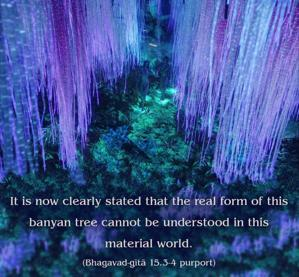
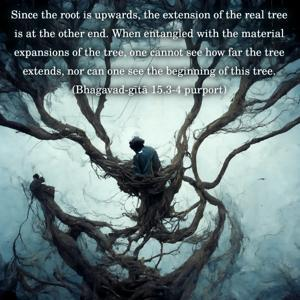
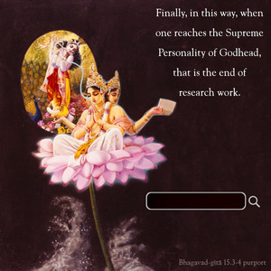

The real form of this tree cannot be perceived in this world. No one can understand where it ends, where it begins, or where its foundation is. But with determination one must cut down this strongly rooted tree with the weapon of detachment. Thereafter, one must seek that place from which, having gone, one never returns, and there surrender to that Supreme Personality of Godhead from whom everything began and from whom everything has extended since time immemorial.



It is now clearly stated that the real form of this banyan tree cannot be understood in this material world. Since the root is upwards, the extension of the real tree is at the other end. When entangled with the material expansions of the tree, one cannot see how far the tree extends, nor can one see the beginning of this tree. Yet one has to find out the cause. “I am the son of my father, my father is the son of such-and-such a person, etc.” By searching in this way, one comes to Brahmā, who is generated by the Garbhodaka-śāyī Viṣṇu. Finally, in this way, when one reaches the Supreme Personality of Godhead, that is the end of research work. One has to search out that origin of this tree, the Supreme Personality of Godhead, through the association of persons who are in knowledge of that Supreme Personality of Godhead. Then by understanding one becomes gradually detached from this false reflection of reality, and by knowledge one can cut off the connection and actually become situated in the real tree.
The word asaṅga is very important in this connection because the attachment for sense enjoyment and lording it over the material nature is very strong. Therefore one must learn detachment by discussion of spiritual science based on authoritative scriptures, and one must hear from persons who are actually in knowledge. As a result of such discussion in the association of devotees, one comes to the Supreme Personality of Godhead. Then the first thing one must do is surrender to Him. The description of that place whence having gone one never returns to this false reflected tree is given here. The Supreme Personality of Godhead, Kṛṣṇa, is the original root from whom everything has emanated. To gain the favor of that Personality of Godhead, one has only to surrender, and this is a result of performing devotional service by hearing, chanting, etc. He is the cause of the extension of the material world. This has already been explained by the Lord Himself. Ahaṁ sarvasya prabhavaḥ: “I am the origin of everything.” Therefore to get out of the entanglement of this strong banyan tree of material life, one must surrender to Kṛṣṇa. As soon as one surrenders unto Kṛṣṇa, one becomes detached automatically from this material extension.